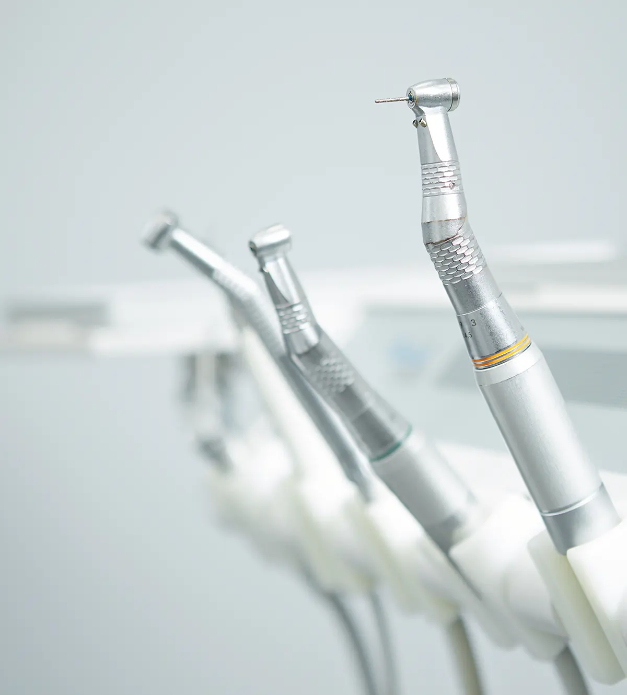
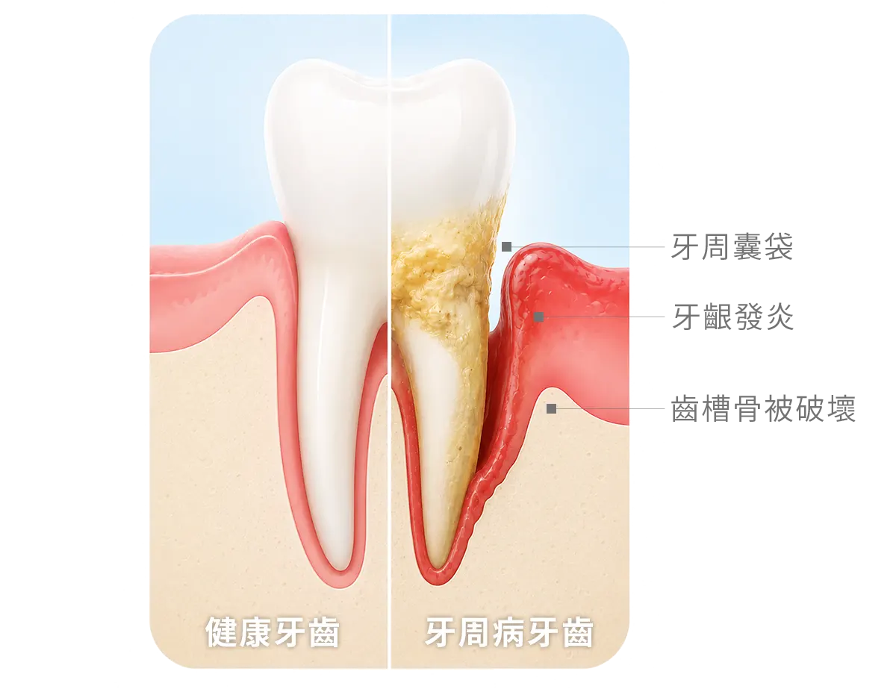

牙齦紅腫、容易流血
刷牙、使用牙線或進食時牙齦出血，也可能伴隨腫脹與不適。
穩定牙齦與齒槽骨，是口腔重建的基礎
牙周治療的目標是控制牙齦發炎、牙周囊袋與齒槽骨破壞，讓自然牙、植牙或假牙修復都建立在穩定的口腔環境上。

牙周治療的目標是控制牙齦發炎、牙周囊袋與齒槽骨破壞，讓自然牙、植牙或假牙修復都建立在穩定的口腔環境上。
生活牙醫會依照每位患者的口腔條件、期待、預算與長期維護需求，安排完整檢查與醫師說明。療程開始前會先釐清適合對象、可能限制與替代方案，讓治療計畫更透明。
實際治療方式與時間會因牙齒狀況、牙周健康、咬合、生活習慣與全身病史而異，建議以現場醫師診斷為準。

牙周病屬於慢性疾病，早期症狀可能不明顯，常在急性發炎或定期檢查時才被發現。若出現以下情況，建議安排牙周檢查。

刷牙、使用牙線或進食時牙齦出血，也可能伴隨腫脹與不適。
牙周支持組織受到破壞後，牙齒位置與原本咬合可能逐漸改變。
牙根逐漸暴露，使牙齒外觀看起來變長，也可能增加敏感情況。
牙齦邊緣或牙縫持續累積菌斑與牙結石，是牙周發炎的重要警訊。
牙齦與牙齒之間逐漸剝離，容易藏匿細菌與食物殘渣並產生口臭。
咬東西時出現痠軟、疼痛或使不上力，嚴重時牙齒也可能開始搖動。
牙周病初期不一定疼痛，不能只以「會不會痛」判斷；定期檢查有助及早發現牙周囊袋與齒槽骨變化。
每個療程都會先確認口腔基礎條件，再依診斷結果安排合適步驟與回診節奏。
整理諮詢時常見的問題，協助您在看診前先掌握基本方向。
整理諮詢時常見的問題，協助您在看診前先掌握基本方向。
歡迎預約諮詢，由醫師一對一親診為您規劃療程，讓我們一起打造最符合需求的治療方案